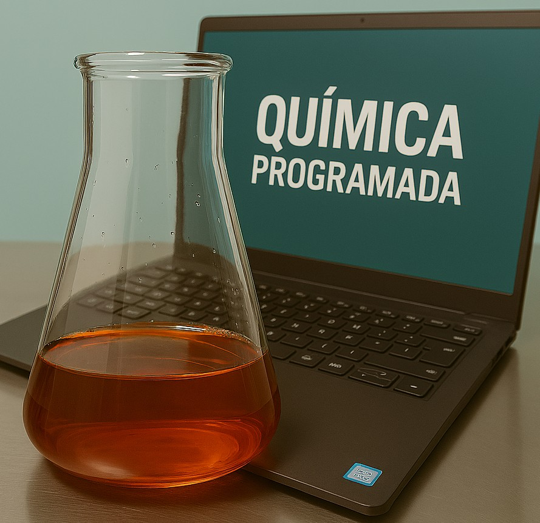

O objetivo do Química Programada é compartilhar algumas aplicações práticas em Linguagem Python, HTML, Javascript, C++, PHP, Mysql e Scilab voltadas às areas da Química e da Engenharia Química. São poucos os sites livres que utilizam exemplos relacionados a essas áreas para ilustrar como técnicas de Programação Orientada a Objetos, Ciência de Dados, uso de formulários HTML e Banco de Dados em PHP e Mysql podem ser úteis para resolução de problemas práticos. A maioria dos sites e cursos se concentra em exemplos na área de negócios, aplicações para e-commerce, logística, entre outros. Esses exercícios foram realizados em paralelo com alguns cursos nas áreas de programação realizadas pelo desenvolvedor do Química Programada, com o objetivo de solidificar os aprendizados. Comentários, críticas ou sugestões de melhoria devem ser encaminhadas para o email quimicaprogramada@gmail.com. O perfil será atualizado assim que novas aplicações relevantes forem desenvolvidas.

Desenvolvimento : Química Programada